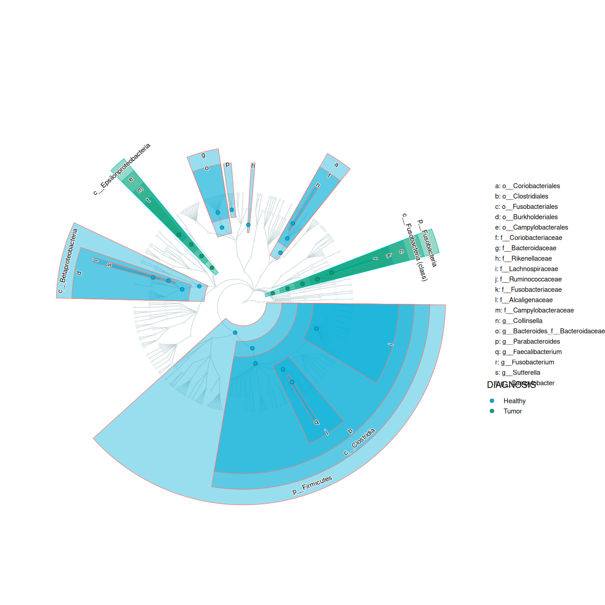
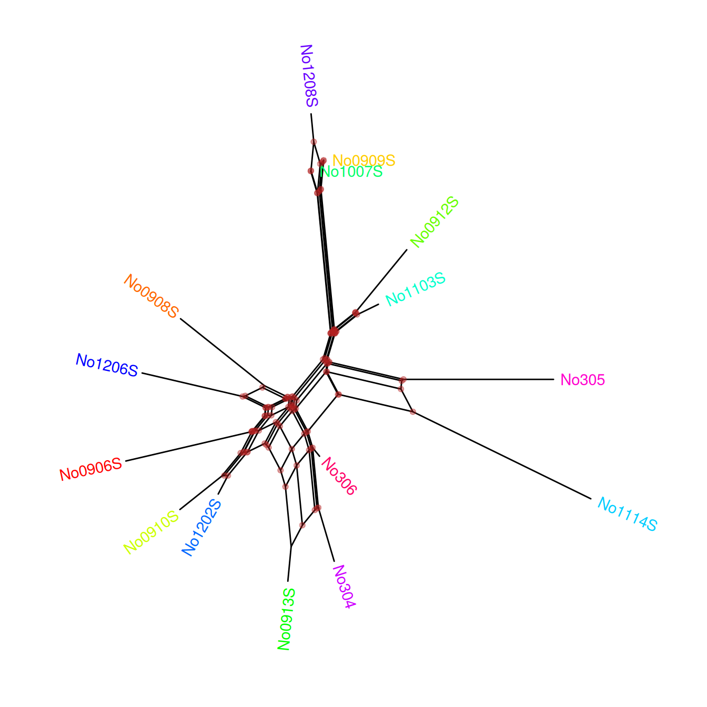

library(knitr)
opts_chunk$set(message=FALSE, warning=FALSE, eval=TRUE, echo=TRUE, cache=TRUE)
library(yulab.utils)
source("software-link.R")9 Other ggtree Extensions
The ggtree package is a general package for visualizing tree structures and associated data. If you have some special requirements that are not directly provided by ggtree, you may need to use one of the extension packages built on top of ggtree. For example, the RevGadgets package for visualizing the output of the RevBayes, the sitePath package for visualizing fixation events on phylogenetic pathways, and the enrichplot package for visualizing hierarchical structure of the enriched pathways.
rp <- BiocManager::repositories()
db <- utils::available.packages(repo=rp)
x <- tools::package_dependencies('ggtree', db=db,
which = c("Depends", "Imports"),
reverse=TRUE)
print(x) $ggtree
[1] "cardelino" "cogeqc" "enrichplot"
[4] "ggmsa" "ggtreeDendro" "ggtreeExtra"
[7] "ggtreeSpace" "gINTomics" "lefser"
[10] "LinTInd" "LymphoSeq" "miaViz"
[13] "microbiomeMarker" "MicrobiotaProcess" "orthogene"
[16] "philr" "scBubbletree" "scDotPlot"
[19] "singleCellTK" "sitePath" "systemPipeTools"
[22] "tanggle" "treeclimbR" "treekoR"
[25] "BioVizSeq" "DAISIEprep" "ddtlcm"
[28] "delimtools" "dowser" "EvoPhylo"
[31] "FossilSim" "genBaRcode" "harrietr"
[34] "mycolorsTB" "numbat" "Platypus"
[37] "RevGadgets" "scistreer" "shinyTempSignal"
[40] "STraTUS" "Sysrecon" "TransProR" There are 42 packages in CRAN or Bioconductor that depend on or import ggtree and several packages on GitHub that extend ggtree. Here we briefly introduce some extension packages, including MicrobiotaProcess and tanggle.
9.1 Taxonomy Annotation Using MicrobiotaProcess
The MicrobiotaProcess package provides a LEfSe-like algorithm (Segata et al., 2011) to discover microbiome biomarkers by comparing taxon abundance between different classes. It provides several methods to visualize the analysis result. The ggdiffclade is developed based on ggtree (Yu et al., 2017). In addition to the diff_analysis() result, it also supports a data frame that contains a hierarchical relationship (e.g., taxonomy annotation or KEGG annotation) with another data frame that contains taxa and factor information and/or pvalue. The following example demonstrates how to use data frames (i.e., analysis results) to visualize the differential taxonomy tree. More details can be found on the vignette of the MicrobiotaProcess package.
library(MicrobiotaProcess)
library(ggplot2)
library(TDbook)
# load `df_difftax` and `df_difftax_info` from TDbook
taxa <- df_alltax_info
dt <- df_difftax
ggdiffclade(obj=taxa,
nodedf=dt,
factorName="DIAGNOSIS",
layout="radial",
skpointsize=0.6,
cladetext=2,
linewd=0.2,
taxlevel=3,
# This argument is to remove the branch of unknown taxonomy.
reduce=TRUE) +
scale_fill_manual(values=c("#00AED7", "#009E73"))+
guides(color = guide_legend(keywidth = 0.1, keyheight = 0.6,
order = 3,ncol=1)) +
theme(panel.background=element_rect(fill=NA),
legend.position="right",
plot.margin=margin(0,0,0,0),
legend.spacing.y=unit(0.02, "cm"),
legend.title=element_text(size=7.5),
legend.text=element_text(size=5.5),
legend.box.spacing=unit(0.02,"cm")
)
The data frame of this example is from the analysis result of diff_analysis() using public datasets (Kostic et al., 2012). The colors represent the features enriched in the relevant class groups. The size of circle points represents the -log10(pvalue), i.e., a larger point indicates a greater significance. In Figure ?fig-CRCdiffclade, we can find that Fusobacterium sequences were enriched in carcinomas, while Firmicutes, Bacteroides, and Clostridiales were greatly reduced in tumors. These results were consistent with the original article (Kostic et al., 2012). The species of Campylobacter has been proven to be associated with colorectal cancer (Amer et al., 2017; He et al., 2019; Wu et al., 2013). We can find in Figure ?fig-CRCdiffclade that Campylobacter was enriched in tumors, while its relative abundance is lower than Fusobacterium.
9.2 Visualizing Phylogenetic Network Using Tanggle
The tanggle package provides functions to display a split network. It extends the ggtree package (Yu et al., 2017) to allow the visualization of phylogenetic networks (Figure ?fig-phylonetworx).
library(ggplot2)
library(ggtree)
library(tanggle)
file <- system.file("extdata/trees/woodmouse.nxs", package = "phangorn")
Nnet <- phangorn::read.nexus.networx(file)
ggsplitnet(Nnet) +
geom_tiplab2(aes(color=label), hjust=-.1)+
geom_nodepoint(color='firebrick', alpha=.4) +
scale_color_manual(values=rainbow(15)) +
theme(legend.position="none") +
ggexpand(.1) + ggexpand(.1, direction=-1)
9.3 Summary
The ggtree is designed to support the grammar of graphics, allowing users to quickly explore phylogenetic data through visualization. When users have special needs and ggtree does not provide them, it is highly recommended to develop extension packages to implement these missing functions. This is a good mechanism, and we also hope that ggtree users can become a ggtree community. In this way, more functions for special needs can be developed and shared among users. Everyone will benefit from it, and it’s exciting that this is happening.
Amer, A., Galvin, S., Healy, C. M., & Moran, G. P. (2017). The microbiome of potentially malignant oral leukoplakia exhibits enrichment for fusobacterium, leptotrichia, campylobacter, and rothia species. Frontiers in Microbiology, 8, 2391. https://doi.org/10.3389/fmicb.2017.02391
He, Z., Gharaibeh, R. Z., Newsome, R. C., Pope, J. L., Dougherty, M. W., Tomkovich, S., Pons, B., Mirey, G., Vignard, J., Hendrixson, D. R., & Jobin, C. (2019). Campylobacter jejuni promotes colorectal tumorigenesis through the action of cytolethal distending toxin. Gut, 68(2), 289–300. https://doi.org/10.1136/gutjnl-2018-317200
Kostic, A. D., Gevers, D., Pedamallu, C. S., Michaud, M., Duke, F., Earl, A. M., Ojesina, A. I., Jung, J., Bass, A. J., Tabernero, J., et al. (2012). Genomic analysis identifies association of fusobacterium with colorectal carcinoma. Genome Research, 22(2), 292–298. https://doi.org/10.1101/gr.126573.111
Segata, N., Izard, J., Waldron, L., Gevers, D., Miropolsky, L., Garrett, W. S., & Huttenhower, C. (2011). Metagenomic biomarker discovery and explanation. Genome Biology, 12(6), R60. https://doi.org/10.1186/gb-2011-12-6-r60
Wu, N., Yang, X., Zhang, R., Li, J., Xiao, X., Hu, Y., Chen, Y., Yang, F., Lu, N., Wang, Z., et al. (2013). Dysbiosis signature of fecal microbiota in colorectal cancer patients. Microbial Ecology, 66(2), 462–470. https://doi.org/10.1007/s00248-013-0245-9
Yu, G., Smith, D. K., Zhu, H., Guan, Y., & Lam, T. T.-Y. (2017). Ggtree: An r package for visualization and annotation of phylogenetic trees with their covariates and other associated data. Methods in Ecology and Evolution, 8(1), 28–36. https://doi.org/10.1111/2041-210X.12628